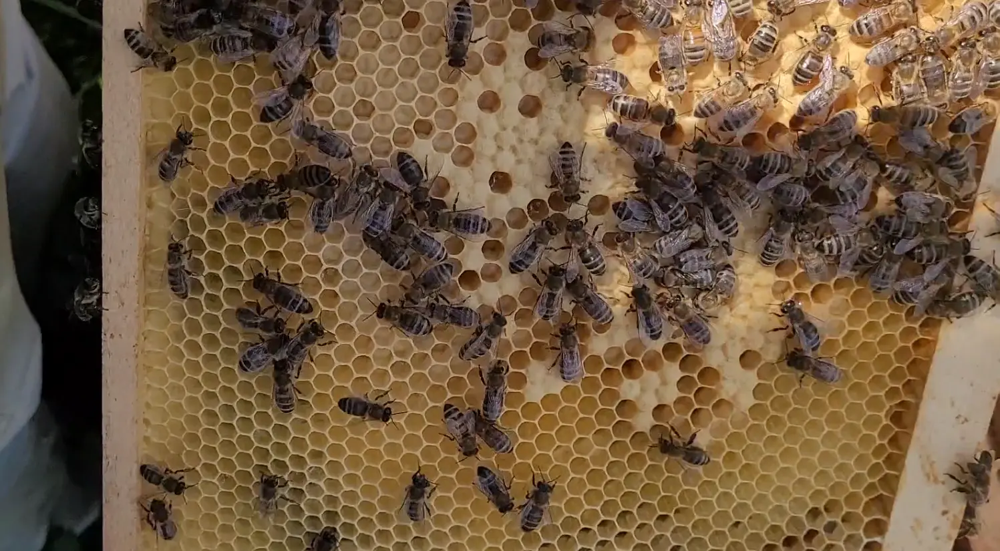

Last updated: 17 October 2026
A hive with no visible queen is not necessarily queenless. Most beekeepers do not see the queen during every inspection, so the more reliable approach is to look for evidence that she has been present recently.
Fresh eggs, young larvae and an orderly brood pattern are normally more useful than finding the queen herself. When these signs disappear, however, you need to establish whether the colony has genuinely lost its queen, is experiencing a temporary brood break or contains a virgin queen that has not yet started laying.
Acting too quickly can make the situation worse. Introducing another queen while an unmated queen is already present may result in the new queen being rejected and killed. If you simply failed to spot the queen, start with the missing queen checklist before assuming she has gone.
Quick Answer
The strongest signs of a queenless hive are:
- No eggs or young larvae when brood should be present.
- Emergency queen cells built around young worker larvae.
- Increasingly unsettled behaviour when the hive is opened.
- No new worker brood after sufficient time has passed.
- Multiple eggs, scattered drone brood and other signs of laying workers in a colony that has been queenless for an extended period.
None of these signs should be considered alone. Recent swarming, supersedure, queen introduction, poor mating weather and a natural brood break can all temporarily leave a colony without eggs.
Queenless Hive Signs at a Glance
| What you find | What it may mean | What to check next |
|---|---|---|
| Fresh eggs | A queen was laying very recently | Do not assume queenlessness because the queen was not seen |
| Sealed brood but no eggs or larvae | Laying stopped several days ago, or a virgin queen may be present | Review swarm history, queen cells and inspection dates |
| Emergency queen cells | The colony believed it had lost its queen when the cells were started | Check whether a virgin queen may already have emerged |
| Multiple eggs and scattered drone brood | Possible laying workers | Compare egg position and pattern with a drone-laying queen |
| No brood and no queen cells | Possible queenlessness, brood break or missed virgin queen | Use colony history and consider a test frame in suitable conditions |
1. There Are No Eggs or Young Larvae
A healthy laying queen normally provides a continuing progression of eggs, larvae and sealed brood during the active season. If you find sealed brood but no eggs or young larvae, the queen may have stopped laying or disappeared several days earlier. If all brood has emerged, the colony may have been without a laying queen for around three weeks or longer.
However, no eggs does not automatically mean no queen. Possible explanations include:
- A recent swarm has left a virgin queen behind.
- A supersedure queen has not yet mated.
- Poor weather has delayed mating flights.
- A newly mated queen has not started laying.
- The colony is undergoing a seasonal or food-related brood break.
- Eggs are present but difficult to see in dark comb or poor light.
Before deciding that the colony is queenless, consider what you saw during the previous inspection. The brood pattern guide can help you interpret eggs, larvae, capped brood and gaps in the pattern.

2. The Bees Have Built Emergency Queen Cells
When a queen is suddenly lost, workers may select very young larvae and extend their worker cells downwards to produce emergency queens. These cells are commonly found across the face of the comb rather than hanging from the lower edge like typical swarm cells.
Emergency queen cells provide strong evidence that the colony believed it had lost its queen when the cells were started. They do not necessarily mean the hive is still queenless now. A virgin queen may already have emerged and be moving around the colony unnoticed.
Do not automatically destroy every queen cell. First establish why the bees produced it and whether the colony still needs it. Compare what you find with the queen cell guide and the dedicated explanation of emergency queen cells.
3. The Colony Sounds or Behaves Differently
Beekeepers sometimes describe a queenless colony as “roaring”. The bees may produce a louder, more sustained sound when the hive is opened and can appear restless across the comb. You may also notice bees fanning or moving around in a less organised way.
This behaviour can support other evidence, but it is not a reliable diagnosis by itself. Colonies may become noisy because of poor weather, disturbance, robbing, hunger or the beekeeper’s handling. Use behaviour as a clue, not proof.
4. Brood Production Has Stopped
If repeated inspections show no new eggs or worker brood, queenlessness becomes increasingly likely. The brood pattern may gradually change from:
- Eggs, larvae and sealed brood.
- Larvae and sealed brood, but no eggs.
- Sealed brood only.
- No worker brood remaining.
The condition of the remaining brood can help estimate when laying stopped. Worker brood is normally sealed around nine days after the egg was laid and emerges at approximately 21 days. This timeline is useful, but it should always be considered alongside any recent swarm cells, supersedure cells or known queen-rearing activity.
5. Laying Workers Have Developed
If a colony remains queenless for long enough, some workers may begin laying unfertilised eggs. These can produce drones but not worker bees.
Possible signs include:
- Several eggs in one cell.
- Eggs attached to cell walls rather than neatly placed at the bottom.
- A scattered and irregular brood pattern.
- Raised drone cappings in worker-sized cells.
- Small patches of drone brood across several frames.
A newly mated queen can occasionally lay more than one egg in a cell while she settles into laying. Multiple eggs alone are therefore not conclusive. Look at their placement. A queen can reach the bottom of the cell, whereas laying workers often deposit eggs partway up the cell walls.
A laying-worker colony is more difficult to requeen because the workers may reject an introduced queen. Read laying workers in bees and compare the pattern with a drone-laying queen before deciding what to do.
Queenless or Waiting for a Virgin Queen?
This is one of the most important distinctions in beekeeping. After a colony swarms or raises an emergency queen, there can be a considerable gap before eggs reappear. The new queen must emerge, mature inside the hive, complete mating flights in suitable weather and begin laying.
The entire process can take several weeks, especially if wind or rain delays mating flights. During this period, the colony may appear completely queenless even though a healthy virgin queen is present. Virgin queens are smaller and faster than established laying queens and can be extremely difficult to spot.
Repeatedly opening the hive can disrupt the colony and may interfere with mating or increase the risk of damaging the young queen. If your records show that a queen recently emerged, give the colony an appropriate period to settle before intervening.
Other Conditions That Can Resemble Queenlessness
A temporary brood break
Queens can reduce or stop laying because of poor forage, extreme weather, a lack of available comb or seasonal changes.
A drone-laying queen
An old, poorly mated or failing queen may lay unfertilised eggs. Unlike laying workers, her eggs are generally positioned more neatly, but the resulting brood is predominantly drone brood.
A queen that has recently been introduced
A newly introduced queen may need time before she is released, accepted and begins laying.
A queen restricted by stores
Heavy feeding or a strong nectar flow can fill cells that would otherwise be used for brood, leaving the queen with insufficient laying space.
Eggs that are difficult to see
Fresh eggs are tiny. Hold the frame so that daylight reaches the bottom of the cells, or use a small torch. Dark comb, veils and changing eyesight can make eggs easy to miss.
Using a Test Frame
Where conditions allow, a test frame can help determine whether a colony has a functional queen. Take one frame containing eggs and very young larvae from a healthy colony and place it in the suspected queenless hive. Mark the frame so that you can identify it easily, then check it again after a few days.
If the bees begin constructing emergency queen cells around suitable larvae, that is strong evidence that they do not recognise a functioning queen.
If no queen cells are produced, the colony may contain:
- A laying queen you have not found.
- A virgin queen.
- A recently mated queen that has not started laying.
- Another condition affecting its response.
A test frame is useful, but it is not infallible. Only transfer brood between colonies when you are confident that the donor colony is healthy. Moving frames can spread pests and disease, so avoid transferring brood from a colony showing an abnormal brood pattern or unexplained health problem.
What Should You Do With a Queenless Hive?
The right decision depends on the season, colony strength and how long it has been without a laying queen. The full queenless colony guide explains the practical options in more detail.
Allow an existing queen to develop
If the colony has recently swarmed, raised queen cells or produced a virgin queen, patience may be the correct response. Use your inspection dates to estimate where the colony is in the queen-rearing process.
Introduce a purchased queen
A healthy, reasonably strong colony can be requeened with a mated queen. Before introducing her, you must be confident that no queen or viable queen cell remains. Follow the queen supplier’s introduction instructions and avoid releasing her directly without an acceptance period.
Allow the colony to raise a queen
During the appropriate season, a queenless colony with eggs or young larvae may raise an emergency queen. Success depends on suitable drones, mating weather, colony strength and time remaining in the season. Late in the year, allowing a colony to raise its own queen may be unrealistic.
Unite it with a queenright colony
A weak queenless colony may be better united with a healthy queenright colony rather than attempting to save it independently. Before uniting, confirm which colony has the viable queen, check both colonies for signs of disease and use a recognised method such as a newspaper unite.
Never unite a colony showing suspicious brood disease with another colony. Seek advice from your local association or Bee Inspector if the brood appearance concerns you.
Avoid These Common Mistakes
- Assuming a hive is queenless simply because you cannot find the queen.
- Destroying every queen cell before understanding why it was built.
- Introducing a purchased queen while a virgin queen may still be present.
- Opening the hive repeatedly while a young queen is mating.
- Treating a temporary brood break as confirmed queen loss.
- Moving a test frame from a colony with questionable health.
- Leaving a genuinely queenless colony until laying workers develop.
- Trying to maintain a very weak colony when uniting would give the bees a better chance.
Use Your Inspection Records
Queen problems are much easier to understand when you know what was present during the previous inspection. Useful records include:
- The date eggs were last seen.
- The age and marking of the queen.
- The presence, position and stage of queen cells.
- Whether queen cells were open, sealed or emerged.
- Swarm activity or a sudden fall in bee numbers.
- Brood stages present at each inspection.
- Dates when a queen was introduced or expected to emerge.
- Weather during the likely mating period.
The question is not simply, “Can I see the queen today?” It is, “What does the colony’s recent history tell me should be happening now?”
Keep Queen Events and Follow-up Dates Together
HiveTag keeps queen records, inspection findings and follow-up dates attached to the correct colony. Recording when eggs were last seen, when a queen cell was sealed or when a virgin queen was expected to emerge can help you avoid intervening too early.
Final Thoughts
Queenlessness should be diagnosed from several pieces of evidence rather than one missing queen. Start with eggs, larvae and brood progression. Review previous inspection records, check for queen cells and consider whether a virgin queen or temporary brood break could explain what you see.
If the timeline remains unclear, a carefully selected test frame can provide additional evidence. Once genuine queenlessness is confirmed, decide promptly whether to allow queen rearing, introduce a mated queen or unite the colony.
Patience is important—but so is knowing when the colony has waited long enough.
Frequently Asked Questions
How long can a hive survive without a queen?
A colony can survive for several weeks without a queen, but its population will decline because no new worker bees are being produced. Eventually laying workers may develop, making recovery more difficult.
Does no brood always mean the hive is queenless?
No. A virgin queen, temporary brood break, shortage of laying space, poor weather or seasonal reduction in brood can all result in little or no brood.
Will a queenless hive make a new queen?
It can only raise an emergency queen if it has eggs or sufficiently young female larvae. If no suitable brood remains, it cannot produce a queen without help from the beekeeper.
How long should I wait for a virgin queen to start laying?
The timing varies with her age, weather and mating opportunities. Allow for emergence, maturation, mating flights and the start of laying. Consult your records and avoid disturbing the colony repeatedly during this period.
Can I put a new queen straight into a queenless hive?
Do not release her directly. First confirm that the colony is genuinely queenless and remove unwanted queen cells where appropriate. Introduce her in a cage using the supplier’s recommended method so the bees have time to accept her.
What is the difference between a drone-laying queen and laying workers?
A drone-laying queen generally lays single eggs in a relatively organised pattern, but all or most brood develops as drones. Laying workers often produce several eggs per cell, place eggs on cell walls and create a scattered pattern of drone brood in worker cells.
Join the Conversation
Beekeeping is all about learning from one another. Follow BeezKnees for practical UK beekeeping advice, real apiary experiences, seasonal observations and updates from the world of beekeeping.